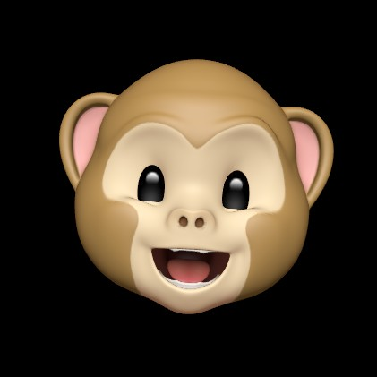

Gangyeon Jo
Sunrin Internet High School Student,
Interested in Develop

SCROLL TO VIEW

Sunrin Internet High School Student,
Interested in Develop
안녕하세요, 선린인터넷고등학교 정보보호과 2학년에 재학중인 조강연학생입니다.
웹페이지 개발에
관심이 많아서 공부하고 있으며 장래희망 또한 이쪽 직군으로 생각하고 있습니다.
웹 개발자라는 장래희망을 위해서 React.js, Node.js, Vanila JavaScript등을 공부하고 있으며, 다양한 프로젝트를 진행하고 있습니다.
평소에 시간이 많을때 카페에 가서 시원한 음료를 마시며 코딩을 하곤 합니다. 여러분들도 카페에 가서 좋아하는 음료를 마시며 하고싶은 공부를 해보세요, 기분이 아주 좋습니다.
항상 초심을 잃지 않도록 노력하는 편입니다. 초등학생들에게 무료로 코딩(스크래치, 블럭코딩)교육을 해주는 봉사를 진행하고 있습니다. 봉사시간 받습니다.
성격은 다소 활발하며 매사에 낙천적인 편입니다.

어떤 일을 하던간에 자신감을 가지고 임합니다.

어떤 생각을 하던간에 낙천적으로 생각합니다.

어떤 일을 하던간에 끈기를 가지고 임합니다.
저는 친구들과 배낭을 매고 좋은 구경거리를 보러다니게 정말 좋습니다, 옆에 있는 사진은 낙산공원에서 찍은 사진입니다.
시간이 많은 방학때나 연휴에는 친구들과 숙소를 잡아 여행을 다닙니다.
사진찍는 걸 좋아합니다, 매우 좋아합니다. 풍경사진이나 제 사진을 찍곤 합니다.
집에서 맛있는 음식들을 직접 요리해서 먹습니다. 요리하는 건 개발하는 것보다 흥미롭고 신이 납니다.